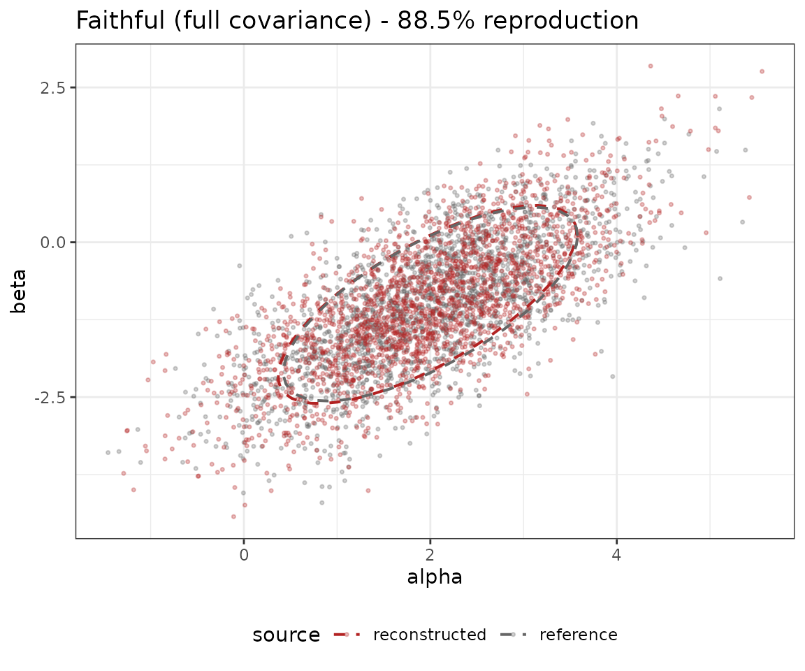
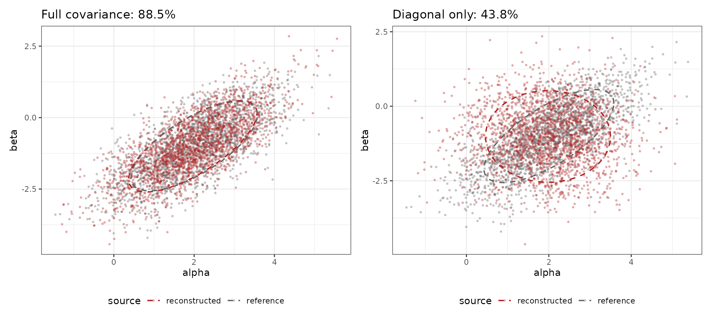
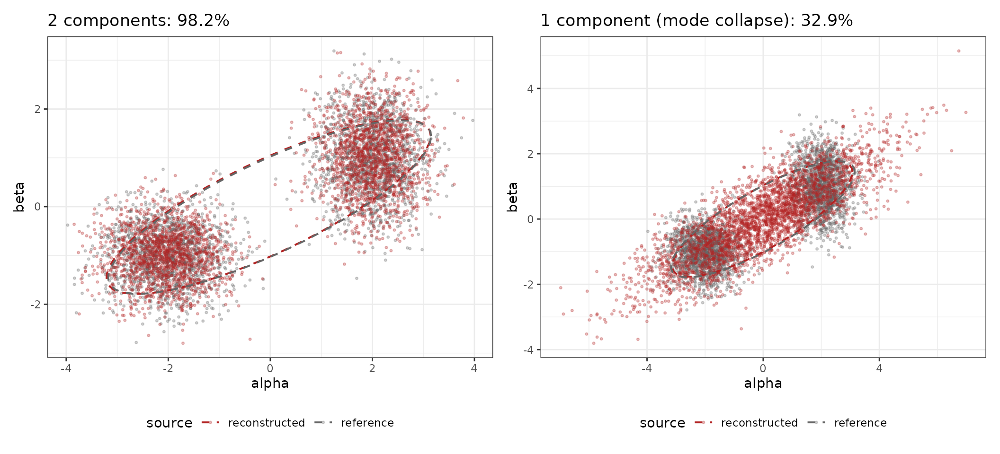
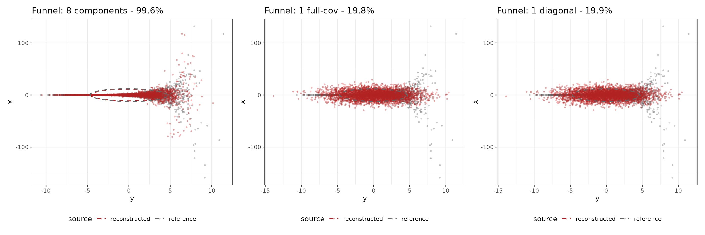
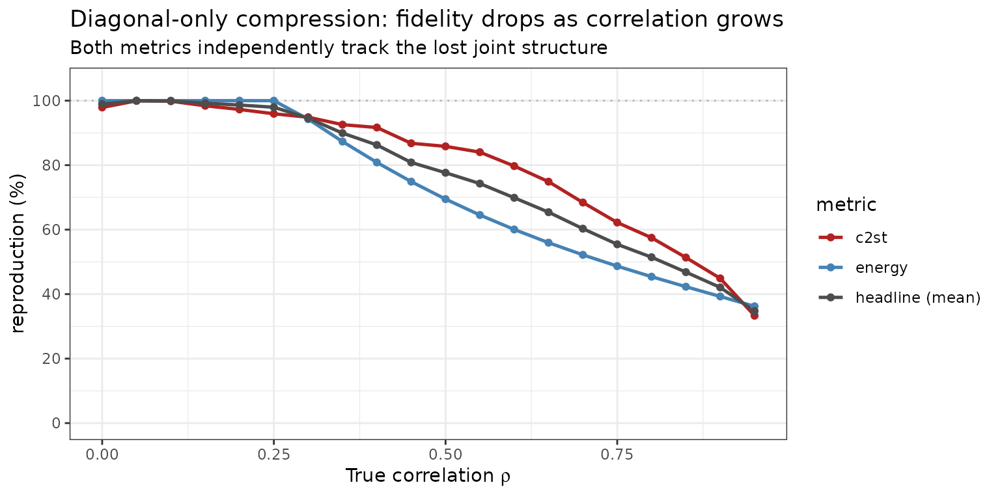

Posterior compression is lossy by construction - just like JPEG for
images. evaluate_compression() reports a
reproduction percentage that quantifies how much
information was lost, and it does so without being circular:
the score does not reuse the same density model (mclust,
mvdens_gmm, mvdens_kde) that performed the
compression.
This vignette walks through the metric on three sanity checks where the visual answer is obvious, then a sweep that pins down the metric’s behaviour as we increase the difficulty of the problem.
evaluate_compression() combines two distribution-free,
sample-based, two-sample diagnostics:
ranger::ranger(), default)
is trained under cross-validation to discriminate reference from
reconstructed draws. Use classifier = "knn" for a k-NN
classifier instead. AUC = 0.5 means indistinguishable; the score is
100 * (1 - 2 * |AUC - 0.5|).Both metrics work purely from samples returned by
sample_posterior(); they never inspect the GMM weights or
KDE bandwidths.
A bivariate Gaussian with strong correlation, compressed with a single full-covariance Gaussian (the textbook right answer).
Sigma <- matrix(c(1.0, 0.7, 0.7, 1.0), 2, 2)
draws <- rmvnorm(2000, mean = c(2, -1), sigma = Sigma)
colnames(draws) <- c("alpha", "beta")
comp_full <- compress_posterior(
draws, method = "mclust",
n_components = 1L, model_name = "VVV"
)
recon_full <- sample_posterior(comp_full, n_draws = 2000)
fid_full <- evaluate_compression(comp_full, draws, seed = 1L)
fid_full
#> <compression_fidelity>
#> method : mclust
#> parameters : 2
#> reference n : 2000
#> eval n : 2000
#> ----------------------------------------
#> energy : 100.0% reproduction
#> distance : 0.0233 noise envelope (q90): 0.0442 ratio: 0.53x
#> C2ST : 76.9% reproduction
#> AUC : 0.385 classifier: ranger cv_folds: 5
#> ----------------------------------------
#> reproduction : 88.5%
The reconstructed cloud is visually indistinguishable from the reference. Both metrics agree it is at the noise floor.
Now compress the same correlated posterior with a
diagonal-only mclust model. By construction, every component
has zero off-diagonal covariance, so any joint correlation between
alpha and beta simply cannot be
represented.
comp_diag <- compress_posterior(
draws, method = "mclust",
n_components = 1L,
model_name = c("EII", "VII", "EEI", "VEI", "EVI", "VVI")
)
recon_diag <- sample_posterior(comp_diag, n_draws = 2000)
fid_diag <- evaluate_compression(comp_diag, draws, seed = 1L)
fid_diag
#> <compression_fidelity>
#> method : mclust
#> parameters : 2
#> reference n : 2000
#> eval n : 2000
#> ----------------------------------------
#> energy : 22.7% reproduction
#> distance : 0.1943 noise envelope (q90): 0.0442 ratio: 4.40x
#> C2ST : 64.9% reproduction
#> AUC : 0.675 classifier: ranger cv_folds: 5
#> ----------------------------------------
#> reproduction : 43.8%
Visually, the orange cloud on the right is circular where the gray reference is elongated: the reconstruction has lost the correlation. The empirical Pearson correlations confirm what the eye sees:
data.frame(
source = c("reference", "diagonal recon", "full recon"),
cor_alpha_beta = c(cor(draws)[1, 2],
cor(recon_diag)[1, 2],
cor(recon_full)[1, 2])
) |>
transform(cor_alpha_beta = round(cor_alpha_beta, 3))
#> source cor_alpha_beta
#> 1 reference 0.706
#> 2 diagonal recon -0.003
#> 3 full recon 0.727The reproduction score drops from 88% to 44% - and crucially, both metrics independently catch it (energy 23%, C2ST 65%):
#> metric full_covariance diagonal_only
#> 1 energy 100.0 22.7
#> 2 c2st 76.9 64.9
#> 3 headline 88.5 43.8A bimodal posterior, compressed with two or one components.
m1 <- rmvnorm(1500, mean = c(-2, -1),
sigma = matrix(c(0.4, 0.0, 0.0, 0.3), 2, 2))
m2 <- rmvnorm(1500, mean = c( 2, 1),
sigma = matrix(c(0.3, 0.0, 0.0, 0.5), 2, 2))
bi <- rbind(m1, m2)
colnames(bi) <- c("alpha", "beta")
comp_two <- compress_posterior(bi, method = "mclust", n_components = 2L)
comp_one <- compress_posterior(bi, method = "mclust", n_components = 1L)
recon_two <- sample_posterior(comp_two, n_draws = 3000)
recon_one <- sample_posterior(comp_one, n_draws = 3000)
fid_two <- evaluate_compression(comp_two, bi, seed = 1L)
fid_one <- evaluate_compression(comp_one, bi, seed = 1L)
The single-component reconstruction visibly bridges the two real modes - and the score drops from 98% to 33%. Once again, both metrics agree something is wrong.
Neal’s funnel is a classic stress test: one dimension controls the scale of the others, creating a narrow neck and strong non-linear geometry. Even in two dimensions, a density approximation that looks reasonable in the bulk can struggle in the neck.
We generate draws from the canonical funnel:
set.seed(1)
n_funnel <- 4000
y <- rnorm(n_funnel, mean = 0, sd = 3)
x <- rnorm(n_funnel, mean = 0, sd = exp(y / 2))
funnel <- cbind(y = y, x = x)
# Higher-capacity model (near-optimal for this example)
comp_funnel_rich <- compress_posterior(
funnel, method = "mclust", n_components = 8L
)
recon_funnel_rich <- sample_posterior(comp_funnel_rich, n_draws = 4000)
fid_funnel_rich <- evaluate_compression(
comp_funnel_rich,
reference_draws = funnel,
seed = 1L,
max_n = 1200L,
n_self_reps = 10L
)
# Oversimplified model 1: single full-covariance Gaussian
comp_funnel_one <- compress_posterior(
funnel, method = "mclust", n_components = 1L, model_name = "VVV"
)
recon_funnel_one <- sample_posterior(comp_funnel_one, n_draws = 4000)
fid_funnel_one <- evaluate_compression(
comp_funnel_one,
reference_draws = funnel,
seed = 1L,
max_n = 1200L,
n_self_reps = 10L
)
# Oversimplified model 2: single diagonal Gaussian
comp_funnel_diag <- compress_posterior(
funnel, method = "mclust", n_components = 1L,
model_name = c("EII", "VII", "EEI", "VEI", "EVI", "VVI")
)
recon_funnel_diag <- sample_posterior(comp_funnel_diag, n_draws = 4000)
fid_funnel_diag <- evaluate_compression(
comp_funnel_diag,
reference_draws = funnel,
seed = 1L,
max_n = 1200L,
n_self_reps = 10L
)
data.frame(
model = c("8 components (richer)", "1 component full-cov", "1 component diagonal"),
reproduction = round(c(
fid_funnel_rich$reproduction_pct,
fid_funnel_one$reproduction_pct,
fid_funnel_diag$reproduction_pct
), 1),
energy = round(c(
fid_funnel_rich$metrics$energy$reproduction_pct,
fid_funnel_one$metrics$energy$reproduction_pct,
fid_funnel_diag$metrics$energy$reproduction_pct
), 1),
c2st = round(c(
fid_funnel_rich$metrics$c2st$reproduction_pct,
fid_funnel_one$metrics$c2st$reproduction_pct,
fid_funnel_diag$metrics$c2st$reproduction_pct
), 1)
)
#> model reproduction energy c2st
#> 1 8 components (richer) 99.6 100.0 99.2
#> 2 1 component full-cov 19.8 21.2 18.5
#> 3 1 component diagonal 19.9 21.1 18.6
As expected, the richer model tracks the funnel geometry better, while oversimplified one-component fits smooth out the neck and lose shape.
If the metric is doing its job, increasing the true correlation should make a diagonal-only compression progressively worse. We sweep the correlation from 0 to 0.95 and watch the reproduction score.
sweep_one_rho <- function(rho, n = 1500, seed = 7L) {
set.seed(seed)
S <- matrix(c(1, rho, rho, 1), 2, 2)
d <- rmvnorm(n, sigma = S)
colnames(d) <- c("alpha", "beta")
comp <- compress_posterior(
d, method = "mclust", n_components = 1L,
model_name = c("EII", "VII", "EEI", "VEI", "EVI", "VVI")
)
fid <- evaluate_compression(
comp, d,
seed = 1L,
n_self_reps = 10L,
max_n = 800L
)
data.frame(
rho = rho,
energy = fid$metrics$energy$reproduction_pct,
c2st = fid$metrics$c2st$reproduction_pct,
headline = fid$reproduction_pct
)
}
rhos <- seq(0, 0.95, by = 0.05)
sweep_df <- do.call(rbind, lapply(rhos, sweep_one_rho))
sweep_long <- rbind(
data.frame(rho = sweep_df$rho, metric = "energy",
pct = sweep_df$energy),
data.frame(rho = sweep_df$rho, metric = "c2st",
pct = sweep_df$c2st),
data.frame(rho = sweep_df$rho, metric = "headline (mean)",
pct = sweep_df$headline)
)
ggplot(sweep_long, aes(x = rho, y = pct, colour = metric)) +
geom_hline(yintercept = 100, linetype = 3, colour = "gray70") +
geom_line(linewidth = 0.9) +
geom_point(size = 1.5) +
scale_colour_manual(values = c(
"energy" = "steelblue",
"c2st" = "firebrick",
"headline (mean)" = "gray30"
)) +
scale_y_continuous(limits = c(0, 105),
breaks = seq(0, 100, by = 20)) +
labs(
title = "Diagonal-only compression: fidelity drops as correlation grows",
subtitle = "Both metrics independently track the lost joint structure",
x = expression("True correlation " * rho),
y = "reproduction (%)",
colour = "metric"
) +
theme_bw()
Both energy and C2ST decrease monotonically with the strength of the
joint structure that the diagonal model cannot capture. At
rho = 0 the diagonal model is the truth and
reproduction sits at 100%; by rho = 0.95 the metric
correctly reports a substantial loss.
If you want to rule out any residual concern that the GMM has seen
the reference draws (it has, because we fit on the same
draws), split before fitting:
n <- nrow(bi)
idx <- sample.int(n, size = floor(0.8 * n))
comp_train <- compress_posterior(
bi[idx, ], method = "mclust", n_components = 2L
)
fid_holdout <- evaluate_compression(
comp_train,
reference_draws = bi[-idx, ],
seed = 1L
)
fid_holdout
#> <compression_fidelity>
#> method : mclust
#> parameters : 2
#> reference n : 600
#> eval n : 600
#> ----------------------------------------
#> energy : 63.3% reproduction
#> distance : 0.1873 noise envelope (q90): 0.1186 ratio: 1.58x
#> C2ST : 92.5% reproduction
#> AUC : 0.538 classifier: ranger cv_folds: 5
#> ----------------------------------------
#> reproduction : 77.9%The interpretation is identical, but the reference is data the GMM never saw. Useful as a final sign-off that the score is not optimistically biased.
evaluate_compression() gives you:
reproduction_pct) suitable for reporting alongside
compressed posteriors;mclust,
mvdens_gmm, and mvdens_kde outputs.The sanity checks above are also a useful template for authors of new compression backends to verify that a method has not silently lost correlation, multimodality, or any other joint structure.
sessionInfo()
#> R version 4.6.0 (2026-04-24)
#> Platform: x86_64-pc-linux-gnu
#> Running under: Ubuntu 24.04.4 LTS
#>
#> Matrix products: default
#> BLAS: /usr/lib/x86_64-linux-gnu/openblas-pthread/libblas.so.3
#> LAPACK: /usr/lib/x86_64-linux-gnu/openblas-pthread/libopenblasp-r0.3.26.so; LAPACK version 3.12.0
#>
#> locale:
#> [1] LC_CTYPE=C.UTF-8 LC_NUMERIC=C LC_TIME=C.UTF-8
#> [4] LC_COLLATE=C.UTF-8 LC_MONETARY=C.UTF-8 LC_MESSAGES=C.UTF-8
#> [7] LC_PAPER=C.UTF-8 LC_NAME=C LC_ADDRESS=C
#> [10] LC_TELEPHONE=C LC_MEASUREMENT=C.UTF-8 LC_IDENTIFICATION=C
#>
#> time zone: UTC
#> tzcode source: system (glibc)
#>
#> attached base packages:
#> [1] stats graphics grDevices utils datasets methods base
#>
#> other attached packages:
#> [1] mvtnorm_1.3-7 patchwork_1.3.2 ggplot2_4.0.3 poco_0.2.0
#>
#> loaded via a namespace (and not attached):
#> [1] Matrix_1.7-5 gtable_0.3.6 jsonlite_2.0.0 ranger_0.18.0
#> [5] dplyr_1.2.1 compiler_4.6.0 Rcpp_1.1.1-1.1 tidyselect_1.2.1
#> [9] callr_3.7.6 jquerylib_0.1.4 systemfonts_1.3.2 scales_1.4.0
#> [13] textshaping_1.0.5 yaml_2.3.12 fastmap_1.2.0 lattice_0.22-9
#> [17] R6_2.6.1 labeling_0.4.3 generics_0.1.4 knitr_1.51
#> [21] htmlwidgets_1.6.4 tibble_3.3.1 desc_1.4.3 pillar_1.11.1
#> [25] bslib_0.10.0 RColorBrewer_1.1-3 rlang_1.2.0 cachem_1.1.0
#> [29] xfun_0.57 fs_2.1.0 sass_0.4.10 S7_0.2.2
#> [33] otel_0.2.0 cli_3.6.6 withr_3.0.2 magrittr_2.0.5
#> [37] pkgdown_2.2.0 ps_1.9.3 digest_0.6.39 grid_4.6.0
#> [41] processx_3.9.0 instantiate_0.2.3 mclust_6.1.2 lifecycle_1.0.5
#> [45] vctrs_0.7.3 evaluate_1.0.5 glue_1.8.1 farver_2.1.2
#> [49] ragg_1.5.2 rmarkdown_2.31 pkgconfig_2.0.3 tools_4.6.0
#> [53] htmltools_0.5.9